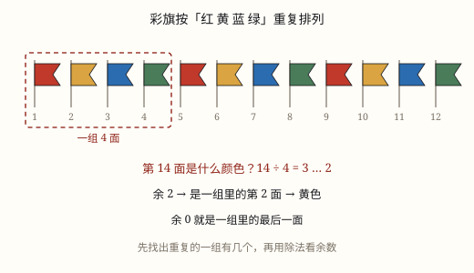

周期中的规律
红绿灯、值日、星期都在转圈重复。找第 100 个是什么，只要一次除法——但余数是 0 时最容易错。
| 所属主题 | 探索规律 |
|---|---|
| 所属模块 | 数学思考 |
| 课标学段 | 第三学段（5~6年级） |
| 前置知识 | 有余数除法的意义 |
| 核心素养 | 数感推理意识模型意识应用意识 |
教材定位
人民教育出版社《2024年版》
对应一下数学广角「找规律」：周期中的规律。
课标要求
| 数与代数·数量关系 | 探索用数或符号表达简单情境中的变化规律（例4和例5）。 印刷第 19 页 行为动词：探索 |
|---|---|
| 数与代数·数量关系 | 能解决生活中的简单问题，并能对结果的实际意义作出解释，经历探索简单规律的过程（例14），形成初步的模型意识和应用意识。 印刷第 21 页 行为动词：运用 |
说明
有些规律不是「越来越大」，而是「转一圈又回来」：星期一过了是星期二，星期日过了又是星期一；红绿灯红、绿、黄，循环往复。这样一组一组重复出现的现象叫周期现象，重复的那一组叫一个周期。
问「第 100 个是什么」，不用一个一个数到 100。只要算「100 里装得下几个整周期、还多几个」：总数 ÷ 周期 = 商……余数。商告诉你排了几整轮，余数告诉你落在这一轮的第几个。
余数是 0 最容易错：它不是「第 0 个」，而是「正好排完整轮」，落在周期的最后一个。
还有一件事要先做：定好周期里第一个是谁。1 月 1 日是星期四，问 1 月 20 日是星期几，得先算经过了多少天，再用天数除以 7 看余数，从星期四往后数。
所以周期题看着花样多，做法只有三步：量出周期有多长，找到起点在周期里的第几位，再用除法看余数。三步里最容易错的是第二步——3 月 1 日并不一定是周期里的第一个，直接拿天数去除，余数就对不上位置了。
使用场景
值日、座位轮换：四个人一轮，问第几天轮到谁。
红绿灯、地铁班次：固定秒数循环，问某一刻是什么状态。
日历与星期：七天一轮，问某天是星期几。
分拣口、单双号：按序号循环分配，问第几件去哪个口。
注意点
周期长度要数准：从第一个到最后一个算一组，「红红黄」是 3 不是 2。
余 0 落在最后一个，不是第一个，也不是「没有」。
商和余数分工不同：商管「几轮」，余数管「这一轮里第几个」。
起点不一定是周期开头：先看起点排在周期第几位，再动除法。

图 1：除以一组的个数，看余数落在第几个
为什么是这样
算理推导
周期是 6 个一组：第 1 到第 6 个是第一轮，第 7 个又回到第 1 个。
100 ÷ 6 = 16 余 4：前面 16 轮用掉 96 个，第 97 个是新一轮的第 1 个，再往后数 3 个，第 100 个就是第 4 个。
如果余数是 0，说明最后一下正好落在整轮末尾——那是第 6 个，不是第 0 个。
所以「余几就是第几个」只在余数不为 0 时直接成立；余 0 要翻译成「周期的最后一个」。
动手实验
在纸上写 1 到 6 围成一个圈，手指从 1 开始点数，数到 6 又回 1。数几圈你会发现手指总在同样的位置打转。再算 100 ÷ 6 的余数，手指正好停在 4 上。用珠子穿一条「3 红 2 黄 1 蓝」的链子，数到第 25 颗验一验：25 ÷ 6 = 4 余 1，是红的。
按场景的例题
例 1（场景：上学日常） 轮流擦黑板
4 个人轮流擦黑板，1 号先擦。第 37 天轮到几号？
解：37 ÷ 4 = 9 余 1，前 9 轮正好用完 36 天，第 37 天是新一轮的第 1 个。
答：1 号。
例 2（场景：行程出行） 路口的红绿灯
红灯 30 秒、绿灯 25 秒、黄灯 5 秒，循环一次 60 秒。第 100 秒是什么灯？
解：100 ÷ 60 = 1 余 40。一轮里，0 到 30 秒红灯，30 到 55 秒绿灯，55 到 60 秒黄灯；40 秒落在绿灯里。
答：绿灯。
例 3（场景：校园生活） 教室挂的彩灯
彩灯按 3 红、2 黄、1 蓝循环。第 100 盏是什么颜色？前 100 盏里红灯共几盏？
解：周期是 3 + 2 + 1 = 6。100 ÷ 6 = 16 余 4，第 4 个是黄色。红灯：16 轮里有 16 × 3 = 48 盏，余下 4 盏里前 3 盏是红，共 51 盏。
答：第 100 盏是黄色，红灯共 51 盏。
例 4（场景：物流运输） 快递分拣格口
快递按 1、2、3 号格口循环分拣。第 1000 件去几号格口？
解：1000 ÷ 3 = 333 余 1，说明排完 333 整轮，第 1000 件是新一轮的第 1 个。
答：1 号格口。
常用推论
总数 ÷ 周期 = 商……余数；余几就是周期里的第几个，余 0 就是最后一个。
数一共出现了几次：商 × 每轮里的次数，再加上余数那一段里还有的次数。
星期问题：经过的天数 ÷ 7，余几就从起始星期往后数几天；余 0 还是同一个星期。
做题顺序固定三步：先量周期长度，再定起点在第几位，最后用除法看余数。
易错点
错彩灯 3 红 2 黄 1 蓝，第 96 盏：96 ÷ 6 = 16 余 0，所以是红色。
为什么错余 0 不是「没有」，而是正好排完 16 整轮，落在这一轮的最后。
正确第 96 盏是蓝色，也就是周期里的第 6 个。
错红灯 30 秒、绿灯 25 秒、黄灯 5 秒，把周期当成 55 秒。
为什么错黄灯也在循环里，漏掉它周期就短了 5 秒，后面的位置全错。
正确周期是 30 + 25 + 5 = 60 秒，用 60 去除。
错1 月 1 日是星期四，算 1 月 20 日：20 ÷ 7 = 2 余 6，从星期四往后数 6 天，得星期三。
为什么错1 月 1 日到 1 月 20 日经过的是 19 天，不是 20 天；而且星期四本身算第 0 天。
正确19 ÷ 7 = 2 余 5，从星期四往后数 5 天，是星期二。
直观理解
周期像操场上的跑道：一直往前跑，跑到终点又回到起点。问「第 100 米在哪儿」，不用真跑 100 米，只要知道一圈多长，再看剩下几米。
一圈一圈转，除法看余数；余几就是几，余零是最后。